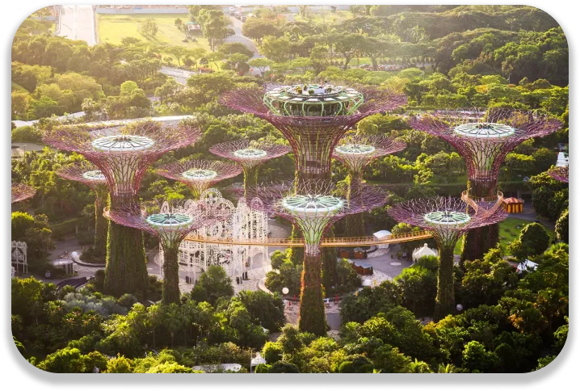
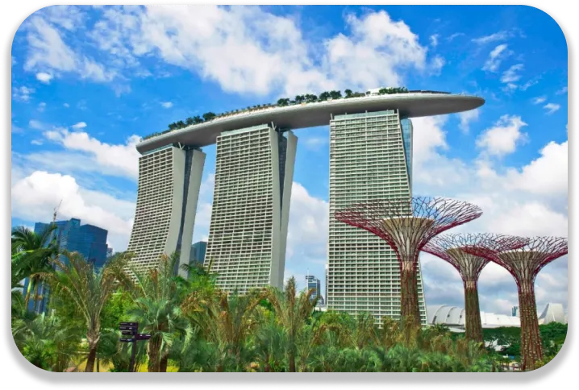

Trop de modernité est-ce dangereux ? C’est une question qu’on peut se poser face à l’émergence des villes modernes. Beaucoup n’ont pas pris en compte le « vert » lors de leur modernisation. Aujourd’hui, elles essaient de se rattraper. Singapour, quant à elle, a dès le début combiné urbanisme et environnement.
Singapour et ses Supers Arbres
La numérisation de Singapour
Singapour est parmi les villes les plus modernes et connectées. Elle s’est classée 1er en tant que ville la plus intelligente en 2021. Ce classement est publié par l’IMD et se base sur les avis des habitants. La ville a des accès WIFI gratuit et dispersée un peu partout. Singapour est vue comme un des principaux pôles d’innovation technologique. Pour rester une ville intelligente, Singapour voudrait une ville numérique. Où le gouvernement, l’économie et la société même est numérique. Où la technologie transforme les domaines de santé, de vie des résidents, des services du gouvernement, des entreprises. Mais elle est déjà bien avancée, surtout au niveau des infrastructures. On peut le voir avec Central Area, le centre-ville de Singapour. Les gratte-ciels témoignent de la modernité et de l’innovation des infrastructures notamment le Marina Bay Sands.
L'hôtel Marina Bay Sands de Singapour
Un jardin dans la ville
En plus d’être une ville intelligente, Singapour est une ville verte. Elle s’approprie la nature dans ses bâtiments moderne. Que ce soit dans l’aéroport ou dans un complexe commercial. La nature peut paraitre reine. Et elle l’est, puisqu’elle domine plus de 50% de la ville. L’aéroport a à lui seul six jardins en son complexe. Il a également un jardin à papillons et des centaines d’espèces de plantes. Dans le fameux jardin Garden By The Bay, la modernité est aussi mixée avec la nature. Les deux serres mêlent innovations et reproduction d’espaces verts. On y retrouvent une cascade intérieure immense et des fleurs du monde entier. Les super arbres sont aussi un autre exemple de ce métissage. Ces infrastructures représentant des arbres sont recouverts de végétations. Le dôme est recouvert de panneau solaire, témoin d’un engagement plus écologique aussi.